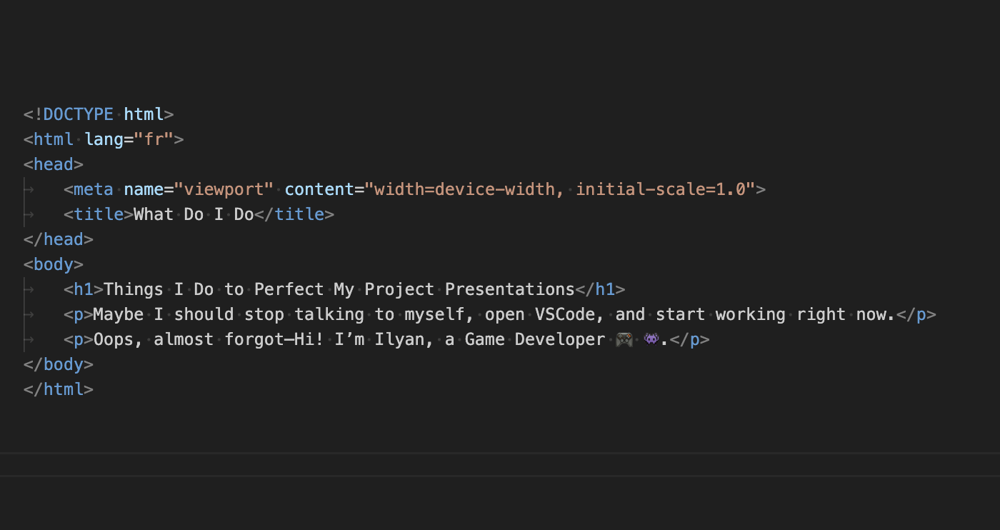

Mon experience
 Etudiant a 42 lyon
Etudiant a 42 lyon
En tant qu'étudiant à l'école 42, je me consacre à l'apprentissage continu en informatique. Je développe mes compétences en programmation et en résolution de problèmes techniques au sein de cette école innovante.


 Game Developer
Game Developer
En tant que passionné de jeux vidéo, je crée et développe mes propres jeux en utilisant des outils comme Unity. Je me concentre sur la réalisation de projets personnels qui me permettent d'explorer ma créativité et mes compétences techniques.
Compétences Techniques
Modélisation d'objets 3D sur Blender : Passionné par la création d'objets 3D, je pratique régulièrement sur Blender pour perfectionner mes compétences en modélisation, texturisation et rendu. Mon expérience inclut la réalisation de modèles complexes et la maîtrise des outils avancés du logiciel.
Création de sites Internet : En apprentissage actif dans le domaine du développement web, je me forme à la création de sites internet en explorant diverses technologies et outils. Je mets en pratique mes connaissances en HTML, CSS et JavaScript pour concevoir et développer des sites web fonctionnels et esthétiques.

Mes Projets
PROJET CREE SUR UNITY

Aria and the Lost Souls
Dans ce platformer, vous incarnez Aria, une héroïne courageuse en quête des âmes perdues. Ces âmes, sous forme d'armes puissantes, sont dispersées à travers différents niveaux, chaque niveau abritant une arme unique. Votre mission est de toutes les rassembler pour affronter Vespera, le grand méchant qui menace le monde et introduit l'histoire du jeu.
Projets
Au cours de mon expérience en tant qu'étudiant à l'école 42, j'ai eu l'opportunité de travailler sur plusieurs projets majeurs. Ces projets m'ont permis de développer mes compétences techniques et de renforcer ma capacité à collaborer efficacement avec d'autres personnes. Parmi les projets les plus significatifs auxquels j'ai participé Chacun de ces projets m'a offert des défis uniques et a contribué de manière substantielle à ma croissance professionnelle et personnelle.
Minishell est un projet de l'école 42 qui consiste à recréer un shell basique. Un shell est un interpréteur de commandes qui permet à l'utilisateur de communiquer avec le système d'exploitation. Le but de ce projet est de comprendre le fonctionnement d'un shell et d'apprendre à manipuler les processus et les signaux. Pour ce faire, j'ai dû implémenter plusieurs fonctionnalités, telles que l'exécution de commandes, la gestion des variables d'environnement, la gestion des signaux, la gestion des erreurs, etc. Ce projet m'a permis de renforcer mes compétences en programmation système et de mieux comprendre le fonctionnement des systèmes d'exploitation. Vous pouvez avoir un appercue de mon travail sur la video en haut a droite, a gauche vous avez mon travail et a droite vous avez le vrai bash.
MINISHELL
Cub3D est un projet de l'école 42 qui consiste à recréer un moteur graphique en utilisant la bibliothèque graphique miniLibX. Le but de ce projet est de comprendre le fonctionnement d'un moteur graphique 3D et d'apprendre à manipuler les raycasting. Pour ce faire, j'ai dû implémenter plusieurs fonctionnalités, telles que le rendu d'une carte 3D, le déplacement du joueur, la gestion des textures, la gestion des collisions, etc. Ce projet m'a permis de renforcer mes compétences en programmation graphique et de mieux comprendre le fonctionnement des moteurs graphiques 3D.
CUB3D
So_long est un projet de l'école 42 qui consiste à recréer un jeu de type "Sokoban" en utilisant la bibliothèque graphique miniLibX. Le but de ce projet est de comprendre le fonctionnement d'un moteur de jeu en 2D et d'apprendre à manipuler les événements clavier et souris. Pour ce faire, j'ai dû implémenter plusieurs fonctionnalités, telles que le rendu d'une carte 2D, le déplacement du joueur, la gestion des ennemis, la gestion des objets, etc. Ce projet m'a permis de renforcer mes compétences en programmation de jeux vidéo et de mieux comprendre le fonctionnement des moteurs de jeu en 2D.
SO_LONG
Push_swap est un projet de l'école 42 qui consiste à trier une pile d'entiers en utilisant un ensemble d'instructions prédéfinies. Le but de ce projet est de comprendre le fonctionnement des algorithmes de tri et d'apprendre à optimiser leur complexité. Pour ce faire, j'ai dû implémenter un algorithmes de tri, l'algorithme de tri "push_swap", et l'optimiser pour trier une pile d'entiers dans l'ordre croissant. Ce projet m'a permis de renforcer mes compétences en algorithmique et de mieux comprendre le fonctionnement des algorithmes de tri.
PUSH_SWAP
Philosophers est un projet de l'école 42 qui consiste à simuler le problème des philosophes dîneurs en utilisant des threads et des mutex. Le but de ce projet est de comprendre le fonctionnement des threads et des mutex et d'apprendre à les manipuler pour résoudre un problème de synchronisation. Pour ce faire, j'ai dû implémenter un programme qui simule le comportement de plusieurs philosophes dîneurs qui partagent des ressources communes (les fourchettes) et doivent éviter les situations de conflit (les interblocages et les courses critiques). Ce projet m'a permis de renforcer mes compétences en programmation concurrente et de mieux comprendre le fonctionnement des threads et des mutex.
PHILOSOPHERS
Minitalk est un projet de l'école 42 qui consiste à créer un programme client-serveur qui permet de communiquer en utilisant des signaux. Le but de ce projet est de comprendre le fonctionnement des signaux et d'apprendre à les manipuler pour établir une communication bidirectionnelle entre deux processus. Pour ce faire, j'ai dû implémenter un programme client qui envoie un message à un programme serveur en utilisant des signaux, et un programme serveur qui reçoit le message et l'affiche à l'écran. Ce projet m'a permis de renforcer mes compétences en programmation système et de mieux comprendre le fonctionnement des signaux.